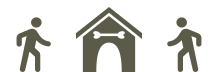

Proceso para adoptar una mascota en Bolivia
Primer paso
El primer paso es encontrar a tu compañero ideal en nuestro buscador de mascotas, donde podrás filtrar tus búsquedas para encontrar el perro o gato que se adapte a tu estilo de vida.

Segundo paso
El segundo paso es visitar a la mascota en el lugar donde se encuentra, esto te dará la oportunidad de conocerla más de cerca, jugar con ella, y asegurarte de que sea una buena opción para ti.
Tercer paso
El tercer paso es convivir con tu nueva mascota en tu hogar, para que puedas asegurarte de que se adapte a su nueva casa y a su nueva familia.

Por último, solo necesitas presentar estos 3 documentos al albergue donde solicitas la adopción:
- Fotocopia o foto de carnet de identidad
- Factura de luz
- Croquis del domicilio
Queremos asegurarnos de que este proceso sea lo más fácil y cómodo posible para ti y la mascota, cualquier duda escríbenos al WhatsApp o checa nuestro blog.
Nuestro objetivo es encontrar un hogar amoroso y permanente para nuestras mascotas rescatadas, porfavor ayudanos a lograr eso.
Requisitos para adoptar
El primero es tener la capacidad física y económica para cuidar de la mascota.
Y el segundo, es una fotocopia simple de estos 3 documentos:
- Carnet de identidad
- Factura de luz
- Croquis del domicilio
Recuerda que pedimos estos documentos para cuidar tanto de ti como de la mascota, gracias por entender ❤️.